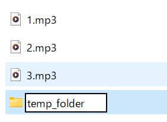
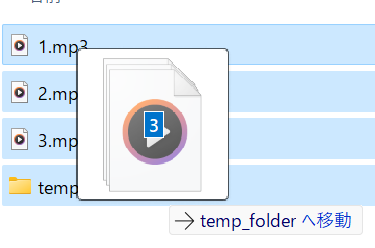

このサイトはファイルを移動させることによって順番を書き換えていますが、それに時間がかかります。
あらかじめ一時ファイルに移動させておくことで反映時間を短縮可能です。
以下を行うことで反映にかかる時間をおよそ1/2にできます。
①temp_folderというフォルダを作成する

②ファイルをすべてtemp_folderに移動させる

③通常通り場所を指定する
(例えば、album1というフォルダにtemp_folderを作成したとすると、temp_folderではなくalbum1を開きます。
反映すると自動でファイルがalbum1に移動し、temp_folderは消えます)